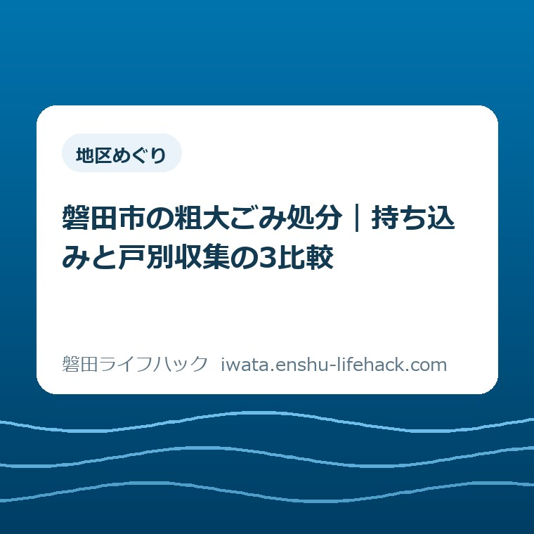
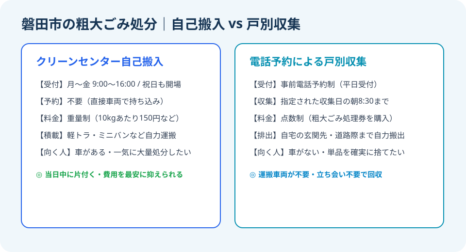
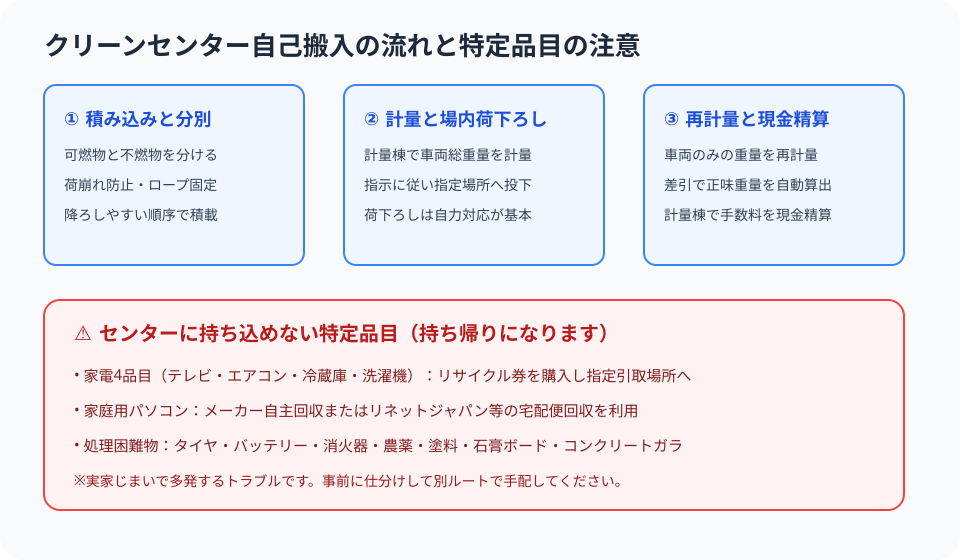

地区めぐり
磐田市の粗大ごみ処分｜持ち込みと戸別収集の3比較

この記事の要点
Q. 磐田市でタンスや布団などの粗大ごみを捨てたい。一番お得で楽な方法は？
A. 車があり即日処分したいなら「磐田市クリーンセンターへの自己搬入」（予約不要・重量精算）が最も安価です。自力運搬が困難な場合は「戸別有料収集」（電話予約制・処理券貼付）を利用します。ただし家電4品目やパソコンは市で処理できないため、別ルートでの手配が必須です。
粗大ごみ片付けの悩みは、住まいの転換期に必ず訪れる
磐田市内で実家の片付けや遺品整理、引っ越し、大掃除を進めていると、必ず直面するのが「自治体の指定袋に入らない大型ごみ」の処分問題です。タンス、ベッドマット、学習机、座椅子、敷布団、スチールラックなど、家屋の中には長年の生活で積み重なった大型家財が数多く眠っています。
大石浩之（磐田市／不動産業・宅地建物取引士）です。日頃から磐田市内での空き家管理、実家じまい、不動産売却のご相談を受けていると、「家の中にある大量の家具や布団をどう処分すればいいかわからない」という声を頻繁に伺います。建物を売却したり解体したりする前には、家財を空にする残置物撤去が欠かせません。
磐田市において一般家庭から出る粗大ごみを処分する方法は、大きく分けて「クリーンセンターへの自己搬入（持ち込み）」と「電話予約による戸別有料収集」の2通りが用意されています。どちらを選ぶべきかは、処分したい物の量、運搬手段となる車の有無、そして作業に携われる人手によって明確に分かれます。
本記事では、2026年9月18日時点で磐田市公式ウェブサイトに公開されている一次情報に基づき、クリーンセンター自己搬入と戸別収集の仕組みを徹底比較します。利用料金、所要時間、運搬負担の3つの軸から違いを整理し、さらにクリーンセンターでは引き取ってもらえない特定品目の正しい出口まで分かりやすく解説します。

自己搬入と戸別収集を分ける3つの比較軸
粗大ごみの処分方法を検討する際は、「料金体系」「所要日数と予約の有無」「家からの運搬負担」という3つの視点で比べると、どちらが自分の状況に適しているかがひと目で分かります。
それぞれの比較項目について、現場での実態を踏まえて詳しく見ていきましょう。
まず第1の比較軸は「利用料金の計算方法」です。クリーンセンターへ直接持ち込む場合は、計量器による「総重量制」で料金が決定されます。持ち込んだごみの重さに応じて一定金額（10kg単位）を現金精算する仕組みです。一方、戸別収集の場合は「品目ごとの点数制」となり、市内の取扱店で事前に「粗大ごみ処理券」を購入して貼り付ける形になります。軽くてかさばる物なら自己搬入が圧倒的に安く、単品で重い物なら戸別収集の方が費用を抑えられるケースもあります。
第2の比較軸は「所要日数と予約の手間」です。クリーンセンターへの持ち込みは事前予約が不要です。平日の受付時間内であれば、軽トラックや自家用車にごみを積み込んでそのまま持ち込めば、その日のうちに処分が完了します。これに対して戸別収集は完全事前予約制であり、電話での申し込みから実際の収集日まで数日から1〜2週間程度の待ち時間が発生します。退去日や引き渡し日が迫っている緊急時には、自己搬入が唯一の選択肢となります。
第3の比較軸は「運搬と荷下ろしの身体的負担」です。戸別収集は、自宅の玄関先や道路に面した敷地境界まで出しておけば回収車が巡回して持って行ってくれます。しかし、クリーンセンターへの持ち込みは、自家用車への積み込み、施設までの運転、そして計量棟やピット前での荷下ろし作業をすべて自力で行う必要があります。高齢の世帯や腰を痛めている方にとって、この自力作業の負担は決して小さくありません。
クリーンセンター自己搬入の利用手順と現場ルール
磐田市クリーンセンター（磐田市刑部島）への自己搬入は、磐田市民であれば誰でも利用できる非常に利便性の高い仕組みです。引っ越しや遺品整理などで大量の家財が一気に出る場合、最も頼りになる処分ルートです。
磐田市公式ウェブサイト「ごみの自己搬入（クリーンセンター）」によると、受付時間は平日の月曜日から金曜日、午前9時から午後4時までとなっています（2026年9月18日確認）。祝日であっても平日と同じ時間帯で開場しているため、平日にお勤めの方でも有給休暇や祝日を活用して搬入することができます。
実際にクリーンセンターへ持ち込む際の流れと注意すべきポイントは以下の通りです。
1. 搬入できるのは磐田市内から出たごみのみ
施設に入る際、受付で搬入申込書を記入します。運転免許証などの身分証明書の提示を求められ、磐田市民であること、および排出場所が磐田市内であることが確認されます。市外にお住まいの親族の実家を片付ける場合は、実家の住所が確認できる公共料金の領収書や委任状などを持参するとスムーズです。
2. 車両への積み込み順序と事前分別の徹底
場内では「可燃粗大ごみ」と「不燃粗大ごみ・金属類」で投下するピットや荷下ろし場所が分かれています。車の中にこれらを無秩序に混載してしまうと、現場で一度降ろした荷物をかき分けながら作業することになり、荷下ろしに膨大な時間がかかってしまいます。奥に可燃物、手前に不燃物というように、品目ごとにまとめて積み込むのが現場での鉄則です。
3. 手数料の現金精算と荷下ろしの自力対応
搬入時の計量器で「車両＋ごみ」の総重量を測り、場内でごみを降ろした後に再度「車両のみ」の重量を測ることで、正味のごみ重量が自動計算されます。計量棟で算出された手数料を現金で精算します。作業員は安全誘導が主業務であり、車内からの荷下ろしは基本的に搬入者本人が行うルールとなっています。重量物がある場合は、必ず大人2人以上で同乗して向かいましょう。

電話予約による戸別有料収集の利用の流れ
自力での運搬が困難な場合や、高齢者世帯で車への積み込みができない場合は、磐田市の「戸別有料収集」を利用します。磐田市公式ウェブサイト「粗大ごみの戸別収集」によると、戸別収集は完全事前予約制で運行されています（2026年9月18日確認）。
利用の流れは極めてシンプルですが、期日に余裕を持つことが大切です。
ステップ1：受付窓口へ電話で事前予約する
磐田市の粗大ごみ受付専用窓口へ電話をかけ、住所、氏名、電話番号、処分したい品目とその数量、サイズなどを伝えます。担当者から収集予定日、受付番号、必要となる粗大ごみ処理券の金額（枚数）が案内されます。
ステップ2：市内の取扱店で「粗大ごみ処理券」を購入する
案内された金額分の処理券を、市役所窓口、支所、協働センター、または市内の指定コンビニエンスストアやスーパー等の取扱所で購入します。処理券には受付番号または氏名を記入する欄があります。
ステップ3：収集日の朝に指定場所へ排出する
収集日の指定された時間（通常は当日の午前8時30分まで）に、粗大ごみ処理券を見えやすい位置に貼り付け、自宅の玄関先や道路に面した敷地内の所定位置へ出しておきます。立ち会いは原則不要です。
ここで特に注意したいのは、「家の中からの搬出作業は市では行わない」という点です。戸別収集であっても、家屋の2階や部屋の奥から屋外の道路際までは、家族や知人の手で運び出しておく必要があります。どうしても自力で外まで運び出せない場合は、市の許可業者（一般廃棄物収集運搬業許可業者）へ個別に見積もりを取って依頼する形になります。
絶対クリーンセンターに持ち込めない「特定品目」の出口
粗大ごみ片付けで最もトラブルになりやすいのが、「クリーンセンターへ持ち込んだのに、ゲートで受入を断られてそのまま持ち帰る羽目になる」という事態です。法律や市の規定により、クリーンセンターや戸別収集では処理できない品目が厳格に定められています。
特に実家の片付けでは、古いブラウン管テレビや小型の冷蔵庫が納戸から出てくることが頻繁にあります。「粗大ごみだからクリーンセンターでいいだろう」とトラックに積んで持っていっても、絶対にゲートを通過できません。家電4品目は最初から仕分けの段階で別枠に隔離し、郵便局でのリサイクル料金支払い手続きを別立てで進めておくことが、無駄足を踏まないためのポイントです。
家電4品目（テレビ・エアコン・冷蔵庫・洗濯機）は、家電リサイクル法に基づきメーカー回収が義務付けられています。処分する際は、①買い替え店への引取依頼、②郵便局でリサイクル券を購入して近隣の指定引取場所へ自己搬入、③市指定の一般廃棄物収集運搬業者へ運搬依頼、のいずれかを選択します。
家庭用パソコンについても資源有効利用促進法に基づき市では収集しません。各パソコンメーカーへの回収申し込み（PCリサイクルマークがあれば無料）や、自治体と提携している小型家電宅配便回収サービス（リネットジャパン等）を活用してください。
良い点は、祝日開場と柔軟な収集体制
磐田市の粗大ごみ処理体制において、私が現場のプロとして高く評価している「良い点」は、クリーンセンターが祝日であっても平日と同様に開場している点です。
多くの自治体では祝日になると一般搬入の受け入れを休止してしまい、平日に仕事がある勤労世帯がごみを持ち込めないという課題を抱えています。しかし磐田市では、月曜日から金曜日の祝日も午前9時から午後4時まで通常通り受け入れています。年末年始や特別点検期間を除き、大型連休や祝日を利用して実家の片付けや模様替えを一気に進められる環境が整っていることは、市民にとって非常に大きなメリットです。
また、戸別有料収集においても、立ち会い不要で道路際に出しておくだけで回収してもらえる仕組みが整っており、日中仕事で不在にする家庭でも負担なく利用できる点が優れています。
料金設定についても、クリーンセンターの重量精算は非常に良心的であり、不用品回収業者へ一括依頼する場合に比べて処分実費を大幅に圧縮できる点も市民目線で心強い仕組みです。
注文したい点は、土日受入枠の限定と屋内搬出支援の不足
一方で、市民生活の利便性をさらに向上させるために「注文したい点」もいくつか存在します。
第1の注文は、土曜日・日曜日の受け入れ枠が原則として存在しない（特別な指定日を除く）という点です。祝日は開場しているとはいえ、共働き世帯や遠方に住む家族が週末を利用して磐田市の実家を片付けに来る場合、金曜日に有給休暇を取るか、平日にスケジュールを合わせる必要があります。月に1回でも週末の自己搬入受付枠が常設されれば、空き家の片付けや遺品整理のハードルがさらに下がるはずです。
第2の注文は、高齢者世帯や一人暮らし世帯に対する「屋内からの運び出し支援」の仕組みが自治体サービスとして用意されていない点です。戸別収集を利用する場合でも、タンスやベッドなどの大型家具を玄関先まで自力で出さなければなりません。高齢化が進む磐田市において、足腰の弱い高齢者だけで大型家具を屋外へ運び出すのは転倒や負傷の危険が極めて高く、現実的ではありません。
シルバー人材センターとの連携や、一定の要件を満たす要介護高齢者世帯向けの運び出しサポート制度など、住まいの現場に寄り添った支援体制の拡充を望みたいところです。
対案・結論——片付けの規模に合わせて無理なく選択する
こうした現状を踏まえた私の「対案・結論」は、片付けの規模と日程の猶予に合わせて、2つの処分手段を明確に使い分けることです。
まず、引っ越しや実家売却に伴う「大量の不用品処分」を行う場合は、迷わず軽トラックやバンを調達し、成人2名以上の体制を組んでクリーンセンターへの自己搬入を選択すべきです。1日で家の中の不用品を一気に搬出でき、処分コストも最小限に抑えられます。その際、事前に家電4品目と処理困難物を完全に仕分けておくことが最大の鍵となります。
一方、「タンス1竿」「壊れたマットレス1台」といった単品の処分であり、自家用車への積載が難しい場合や、運搬の人手を集められない場合は、無理をせず戸別収集を予約するのが賢明な判断です。収集日までは少し時間がかかりますが、車を手配する手間やガソリン代、運転のストレスを考慮すれば、最も安全で確実な選択肢となります。
また、家屋の中に大量の荷物があり、自力での屋外搬出がまったく不可能な場合は、無理に家族だけで抱え込まず、磐田市の一般廃棄物収集運搬業許可業者や信頼できる遺品整理業者へ一括相談することも現実的な結論です。多少の費用はかかりますが、怪我の防止や作業期間の短縮という観点からは十分に投資価値があります。
大石の視点——不用品の処分は、不動産と暮らしの再生の第一歩
ここからは、不動産仲介と空き家管理の現場に立ち続ける「大石の視点」として、粗大ごみ処分が持つ本質的な意味についてお話しします。
私が多くのご家族から空き家や実家の相談を受ける中で痛感するのは、「家の中に物が詰まっている状態は、家族の思考と決断を止めてしまう」ということです。親が施設に入居したり亡くなったりして誰も住まなくなった実家を前にして、多くのお子さん世代は「片付けなければいけないけれど、どこから手をつけていいかわからない」と立ち尽くしてしまいます。
家財がそのまま放置されると、通風や換気が行われず建物の劣化が進み、やがて特定空家や防災上の懸念へとつながっていきます。しかし、誰かが勇気を出して軽トラックを借り、クリーンセンターへ最初の1台分を運び込んだ瞬間から、家の空気は劇的に変わります。床が見え、光が差し込むようになることで、家族全員が「この家をどう活かすか、あるいは売却するか」という未来の前向きな会話を始められるようになるのです。
粗大ごみの処分は、単なる廃棄作業ではありません。長年家族を守ってくれた住まいと向き合い、次の新しい暮らしへとバトンを渡すための神聖な区切りであり、再生の第一歩です。
手続きや運搬で迷ったときは、一人で抱え込まず、自治体の窓口や地域の専門家を頼ってください。住まいの見通しを良くすることが、家族の安心と磐田の街の安全につながっています。
参考にした公式情報
- ごみの自己搬入（クリーンセンター）／磐田市（2026年9月18日確認）
- 粗大ごみの戸別収集／磐田市（2026年9月18日確認）

大石浩之／磐田市／不動産業・宅地建物取引士
最終確認日：2026-09-18 ／ 本記事は公表情報と執筆者の見解を分けて記載しています。制度・日程は変更される場合があります。個別条件で必要書類や利用可否が変わるため、最後は磐田市公式ウェブサイトとクリーンセンターで確認してください。